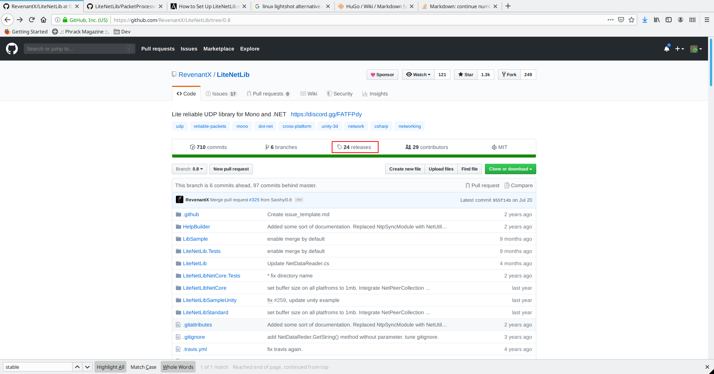

TL;DR Download the most recent stable release source code zip and copy the /LiteNetLib folder to the Plugins folder in your Unity project.
</div>
LiteNetLib is an UDP networking library that can be used for building multiplayer games with Unity. If you have any experience working with Lidgren you’ll feel right at home with LiteNetLib. LiteNetLib is not Unity specific, but it’s a popular choice.
Create a Plugins Folder
Open up your Unity project. If you haven’t already, create a Plugins folder directly under your Assets folder. The Plugins folder is one of several special folders Unity supports. Plugins is a bit of an odd name, but Unity will check here for any 3rd party libraries you may want to use. These can be in the form of DLLs, or raw source files (Unity will compile .cs files).
Assets
└───Scenes
└───Scripts
└───Plugins <-- Create This
Download a Stable Release of LiteNetLib
Swing over to the LiteNetLib GitHub repo. We need to navigate to the release page and find the most recent stable release.

At the time of writing this 0.8.3 is the most recent stable release. Go ahead and download the source code zip, or tar.
It’s best not to use the DLL as there are some platform specific #ifdefs for Unity in the source code. That’s why we extract
</div>

Extract /LiteNetLib to Your Plugins Folder
Once the download completes, extract the LiteNetLib folder from the zip into your Plugins folder. Your project directory should be as follows.
Assets
└───Scenes
└───Scripts
└───Plugins
│ └───LiteNetLib
Switch back into Unity, and it should pop up with a loading window as it processes the new files. Once complete, your project should now have LiteNetLib ready to use. Visual Studio, or VS Code will recognize LiteNetLib classes and Unity will be able to compile your project error free.

Have fun!